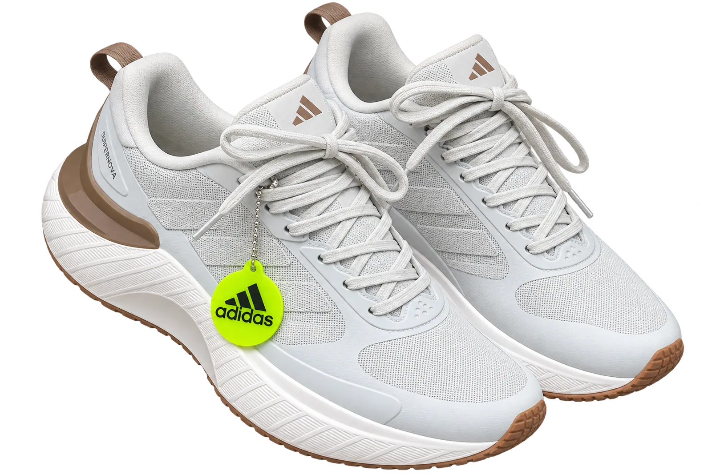
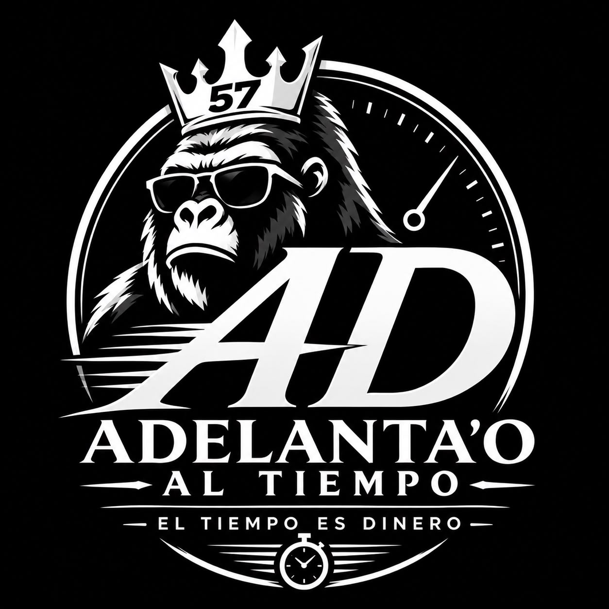

01
Desarrollo web
Sitios, tiendas y aplicaciones web que presentan tu marca y acercan tus servicios a las personas.
Ideas que se
vuelven producto/
Estudio de desarrollo digital. Diseñamos y desarrollamos software que conecta tu negocio con lo que viene.
De una presencia digital a una herramienta para tu operación. Pensamos, construimos y ponemos en marcha.
↗Proyectos en funcionamiento
05
3 sitios en línea · 2 apps de gestión
Disponibles para nuevos proyectos
Web, móvil y software. Escríbenos por WhatsApp o correo.
01 /
Qué hacemos
De una presencia digital a una herramienta para tu operación. Convertimos necesidades reales en productos claros, rápidos y funcionales.
Sitios, tiendas y aplicaciones web que presentan tu marca y acercan tus servicios a las personas.
Apps para Android pensadas para tus clientes o tu equipo, conectadas a tus datos en tiempo real.
Herramientas para tus procesos: inventarios, ventas, reportes y bases de datos a tu medida.
Hacemos más rápidas y estables tus páginas y tu software actual: rendimiento, consultas y experiencia de uso.
02 /
Nuestro trabajo
Tres tiendas y menús digitales en línea, experiencias reales. Abre una vista interactiva aquí mismo o visita cada sitio en una nueva pestaña.


El tiempo es dineroTienda de zapatos deportivos, urbanos y chancletas con envíos a toda Colombia. Eliges modelo y talla, armas tu pedido y lo envías por WhatsApp.
Menú digital de Zipote Food para explorar productos, armar un pedido y enviarlo por WhatsApp.
Catálogo de relojes, zapatos y ropa con navegación por categorías y atención de pedidos por WhatsApp.
Estás navegando el sitio real. Abrir en una nueva pestaña ↗
Estás navegando el sitio real. Abrir en una nueva pestaña ↗
Estás navegando el sitio real. Abrir en una nueva pestaña ↗
Software para la operación
Dos aplicaciones de gestión con datos ficticios para que pruebes sus flujos: productos, compras, ventas con abonos y reportes.
Inventario por tallas, compras y ventas. Prueba los flujos principales con productos de ejemplo.
Productos, categorías y existencias en una aplicación. Registra compras, ventas y abonos, y explora sus reportes.
Demos con datos ficticios · Los cambios se guardan solo en tu navegador
Versión de demostración de los flujos principales. Abrir demo completa ↗
Versión de demostración de los flujos principales. Abrir demo completa ↗
 Pensar. Construir. Desplegar.
Pensar. Construir. Desplegar.
Somos Deplox. Un estudio de desarrollo para convertir ideas en productos digitales.
Nos interesa entender qué necesitas resolver. Desde ahí, damos forma a una solución, la construimos y te acompañamos hasta su despliegue.
Fundador
Ingeniero de Sistemas · Universidad Simón Bolívar
Web
Laravel · PHP · JavaScript · HTML · CSS
Móvil
Android · Firebase
Datos
SQL · MySQL · Power BI · RStudio · Excel avanzado
Redes e IoT
LAN · WAN · FTTH · Cisco Packet Tracer · Wireshark
Experiencia en desarrollo y supervisión de bases de datos, coordinación de equipos y documentación técnica.
Fundador
Ingeniero de Sistemas · Universidad Simón Bolívar
Backend
Laravel · PHP · Java · Python · Lógica de negocio · Desarrollo de API
Desarrollo web
JavaScript · HTML · CSS
Bases de datos
SQL · MySQL · Oracle · Oracle APEX
Herramientas y plataformas
Git · GitHub · Laragon · XAMPP · Firebase
Enfocado principalmente en el desarrollo backend, con experiencia en lógica de negocio, desarrollo de aplicaciones web, integración con bases de datos y construcción de soluciones de software. Con conocimientos complementarios en desarrollo frontend para crear aplicaciones funcionales y completas.
Descubrir
Entendemos tu contexto y definimos juntos el alcance.
Construir
Diseño y desarrollo con avances que puedes revisar.
Desplegar
Preparamos la entrega, la puesta en marcha y la optimización.
El siguiente proyecto puede ser el tuyo
Una buena conversación es el primer paso. Cuéntanos tu idea y te respondemos con una propuesta.